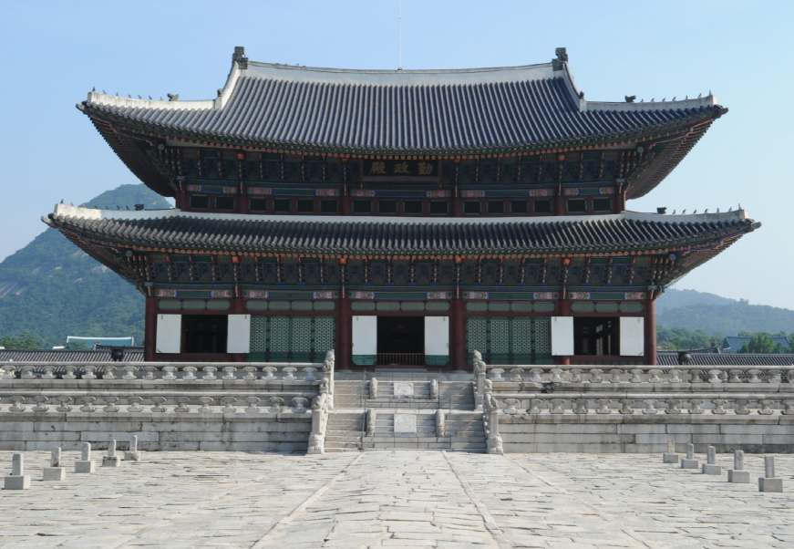
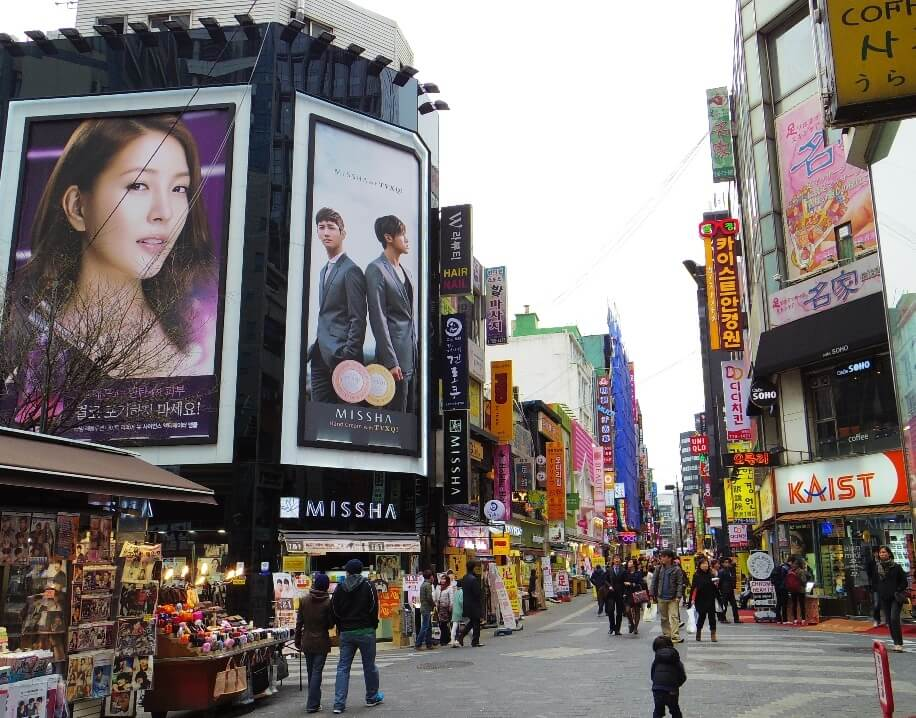
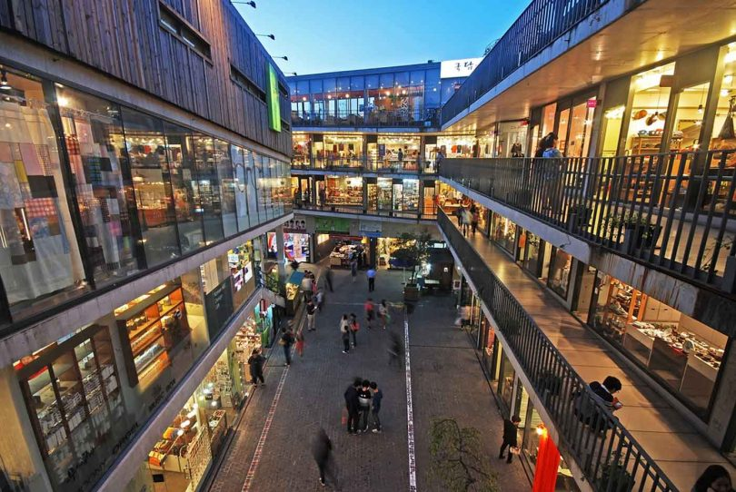
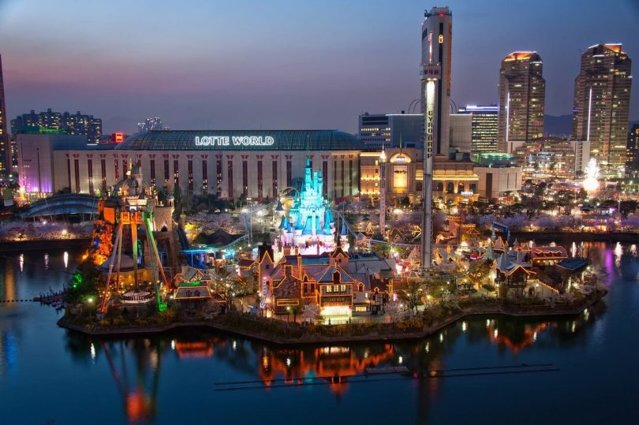
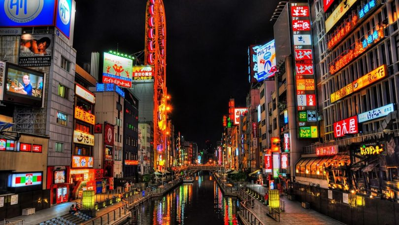

Sejarah

Sejarah Korea Selatan secara resmi dimulai ketika pembentukan negara Korea Selatan pada
15 Agustus 1948, meskipun Syngman Rhee telah mendeklarasikan pembentukannya di Seoul
pada 13 Agustus.
Setelah Penjajahan Jepang di Korea yang berakhir karena kekalahan Jepang pada Perang Dunia II tahun 1945, Korea dibagi menjadi dua wilayah berdasarkan garis 38 derajat
lintang utara sesuai dengan perjanjian yang diadakan oleh PBB. Uni Soviet di bagian utara dan
Amerika Serikat di bagian selatan. Uni Soviet dan Amerika Serikat tidak berhasil mencapai kesepakatan
mengenai implementasi penyatuan Korea. Hal ini mengakibatkan pembentukan pemerintahan yang terpisah dengan
masing-masing pemerintah mengklaim memiliki wilayah resmi atas seluruh Korea.
Geografis

Korea Selatan memiliki banyak pulau-pulau kecil di lepas pantai perairannya. Pulau
terbesar adalah Jeju-do, yang terletak pada bagian selatan semenanjung dengan luas 1.825
km². Pulau penting lainnya adalah Ulleung di Laut Jepang dan Ganghwa di perairan sebelah barat.
Walau sebagian besar pesisirnya memiliki garis yang rata, pantai selatan dan baratnya
berteluk-teluk dan mempunyai dataran berlumpur yang luas.
Gunung tertinggi di Korea Selatan adalah Hallasan (1.950 m), berada di Pulau Jeju.
Terdapat 3 rangkaian pegunungan utama di Korea Selatan, yakni Taebaek, Sobaek dan Jiri.
Hanya 30 % daratan Korea Selatan yang merupakan dataran rendah, karena sebagian besar
wilayahnya adalah dataran tinggi dan pegunungan. Dataran rendah sebagian besar terletak
di pesisir barat dan di lembah-lembah sungai utama. Dataran rendah yang terpenting adalah dataran
rendah Sungai Han yang mencakup DKI Seoul, dataran rendah Pyeongtaek di pesisir barat, Lembah
Sungai Geum, Lembah Sungai Nakdong, dataran Yeongsan dan Honam di barat daya. Dataran rendah di
pesisir timur lebih sempit.
Wisata
Seoul menjadi pilihan dalam liburan terutama bagi anda para penggemar Korea. Ada banyak
sekali tempat wisata terbaik di Seoul yang wajib untuk dikunjungi termasuk tempat belanja,
tempat bersejarah, tempat makan, dan lainnya.
Gyeongbokgung Palace (Istana Gyeongbokgung)
Salah satu tempat wisata terbaik di Seoul adalah sebuah istana yang sangat indah dan
keren. Istana ini terletak di sebeleh utara kota Seoul. Istana Gyeongbokgung ini termasuk terbesar dari 5 istana besar yang dibangun dari Dinasti Joseon. ini dibuka sejak tahun
1395 dan merupakan istana yang penuh dengan sejarah dan keindahan.
Selain itu, para turis dapat mengenakan pakaian tradisional korea atau disebut Hanbok.
Sehingga tidak heran tempat ini cocok untuk pengunjung yang ingin berfoto di negeri ginseng ini.
Seoul N Tower (Menara Seoul N)

Seoul N Tower adalah sebuah pemancar radio yang berada di Seoul dengan ketinggian
menara 236 meter. Bangunan ini mulai dibangun pada tahun 1969 dan mulai dibuka pada
15 Oktober 1980. Menara ini terkadang disebut dengan Menara Seoul atau Menara Namsan saja.
Selain itu, untuk naik ke atas menara para wisatawan dapat naik menggunakan kereta gantung
Namsan. Terdapat juga restoran dan toko untuk mendapatkan oleh-oleh di lantai bawah bangunan ini.
Myeongdong Street

Myeongdong adalah permukiman di kota Seoul dan mencakup wilayah seluas 0,91 km²
dengan populasi sekitar lebih dari 3000 jiwa. Salah satu tempat wisata terbaik di
Seoul ini merupakan tempat belanja favorit ketika berlibur ke Korea Selatan. Selain
terdapat berbagai macam toko, ternyata tempat ini juga menjadi tempat perusahaan terkemuka
dan kantor-kantor pemerintahan.
Insadong

Insadong merupakan permukiman di Seoul dari distrik Jongno-gu. Tempat wisata ini
populer sebagai tempat belanja dan tempat membeli barang seni tradisional Korea.
Di Insadong juga tersedia berbagai macam restoran dengan masakan yang lezat seperti
jamur dan sayur-sayuran. Para wisatawan juga dapat melihat berbagai macam koleksi
kesenian di galeri seni di sekitar Insadong.
Lotte World

Lotte World merupakan suatu wahana taman bermain, pameran satwa laut, dan tempat bermain air dengan luas sekitar 13 hektar.
Taman bermain ini dibuka pada tahun 1989. Lotte World terdiri dari taman bermain indoor dan outdoor.
Taman bermain outdoor disini sering disebut dengan Magic Island, sebuah hotel mewah, Korea Folk Museum, mall belanja, departement store, fasilitas olahraga dan nonton film.
Itaewon Street

Itaewon Street menjadi tempat yang menarik di Seoul untuk berbelanja, makan dan bersenang-senang untuk liburan.
Kawasan ini terkenal di seluruh dunia setelah Asian Games 1986 dan Olimpiade Seoul 1988 dilakukan di sini.
Jalan Itaewon ini membentang sejauh 1,4 km dengan berbagai macam toko, tempat hiburan dan restoran untuk menikmati hidangan lezat.
Sehingga, pada tahun 1997, Jalan Itaewon akhirnya ditetapkan sebagai kawasan wisata resmi.